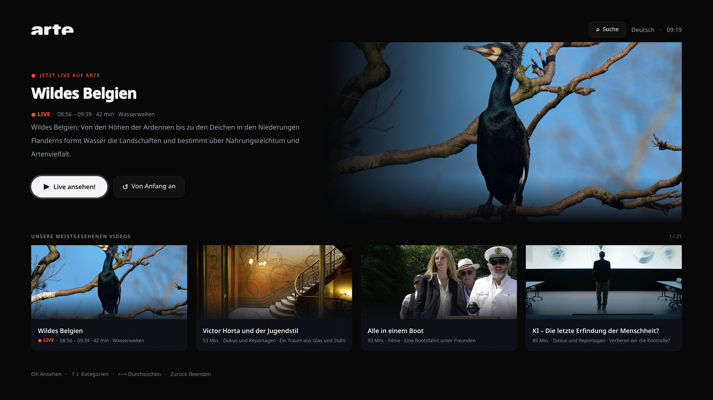
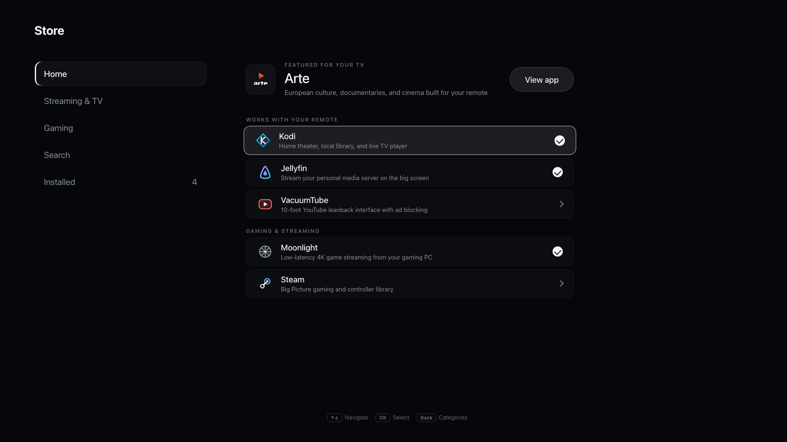
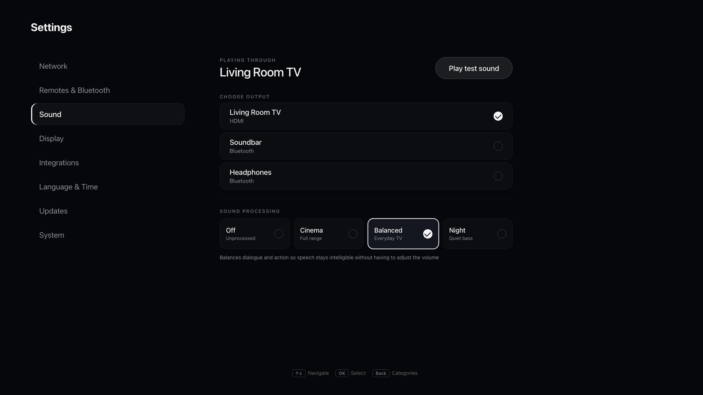
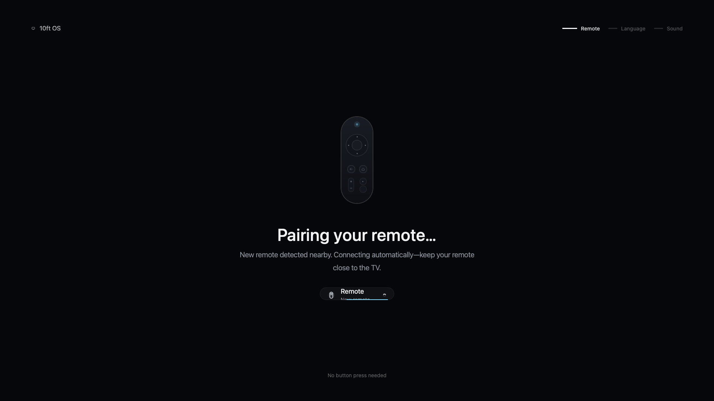

Open-source Linux television OS
A smart TV that
works for you.
Bigfoot OS turns a mini-PC or computer into a TV you control with your remote—a private
alternative to Google TV.
No ads. No telemetry. No account.







What you get
Made for the couch.
Everything is designed to be read from three meters away and driven with five buttons.
-
Big-screen launcher
Boots straight into a Wayland 10-foot TV interface. No desktop, no login screen.
-
App Store
Install Flatpak apps like Kodi, Jellyfin, ARTE.tv, TIDAL, VacuumTube and Plex HTPC in 1 click from the home screen.
-
4K video & cinema audio
Hardware-accelerated 4K HEVC and AV1 decoding on AMD and Intel graphics, HDMI audio passthrough, and adaptive surround-to-stereo downmix presets.
-
Your remote just works
HDMI-CEC is on by default for your regular TV remote, alongside automatic Bluetooth remote pairing and Xbox controller support.
-
Phone as remote
KDE Connect turns your phone into a trackpad, keyboard and media remote (currently needs a working remote to begin with, sorry for that I will fix this soon).
-
Home Assistant
Opt-in local integration to control media playback, volume and TV power from Home Assistant.
3 golden rules, aligned with the goal of
stable and zero distraction television
-
1
A solid base to build on
The read-only system image is verified with Sigstore signatures and can’t be modified by accident. Updates download quietly in the background and apply on reboot—if an update ever misbehaves,
bootclets you roll it back to the previous version in seconds. -
2
No attention seeking, nothing phones home
No recommendations, no ads, no dark patterns, no tracking, and no account requirement. Integrations stay disabled until you enable them, and this website sets no cookies and loads nothing from third parties.
-
3
Zero Bloat
No update popups. No status icons. No alerts. No reminders.
It does not talk to you. It does not understand you.
Unplug it now if it does. It shouldn't.
The system only checks the Bigfoot system repository and Flathub for updates. The Bigfoot repository learns nothing about you from this check.
Install
Ready in a few minutes.
You need a mini-PC (or any other PC), a USB drive, mouse & keyboard and an internet connection during installation.
-
Download the installer
Get the installer for your computer.
-
Write it to a USB stick
Use Fedora Media Writer, balenaEtcher, the Raspberry Pi Imager or the command line. Replace
/dev/sdXwith your USB device. This erases it.sudo dd if=bigfoot-os-amd64-netinstall.iso of=/dev/sdX bs=4M status=progress conv=fsync -
Boot from it
Select your disk on the install screen. Everything else is automatic.
-
Follow the setup wizard
When it reboots, the first-run wizard pairs your remote automatically and guides you through language and sound output.
Update channels
Choose a channel in Settings → Updates at any time.
| Channel | Best for |
|---|---|
| Stable | Your living-room TV. Thoroughly tested. |
| Beta | Early access to upcoming changes. |
| Main | Latest development builds. May break. |
Tested hardware
| Platform | Status |
|---|---|
AMD64 (x86_64) |
Tested on bare metal and QEMU |
ARM64 (aarch64) |
Tested in UTM on macOS |
| Remote or controller | Status |
|---|---|
| Chromecast with Google TV Remote (Bluetooth) | Working (with IR programming) |
| Amazon Fire TV Remote (Bluetooth) | Working (with IR programming) |
| Xbox Elite Wireless Controller Series 2 | Working |
| Other Xbox One S and Series X|S controllers | Untested, supported by xpadneo |
| HDMI-CEC TV remotes, Pulse-Eight USB-CEC adapters, IR receivers | Supported |
Open source
Built in the open.
Bigfoot OS is made of several public projects:
- osThe bootable container OS image
- appdrawerThe TV homescreen and OSD
- storeThe TV app store
- settingsTV settings and OS updates
- oobeFirst-run onboarding
- audio-dspAdaptive surround-to-stereo DSP
- odio-apiHome Assistant and web remote API
- akmodsPre-built kernel modules
- flatpaksThe Bigfoot Flatpak repository
- catalogCurated 10-foot app catalog
- design-guidelinesThe 10-foot UI design system